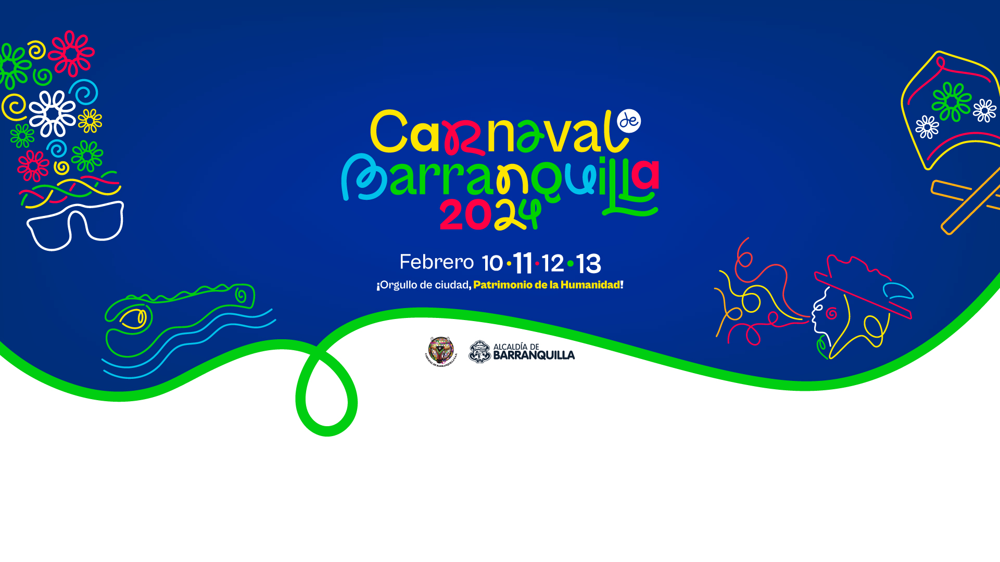
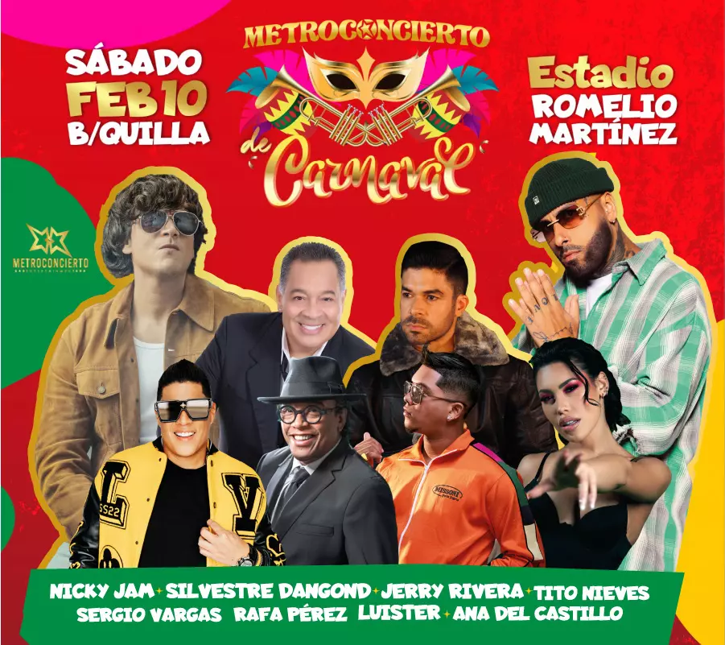
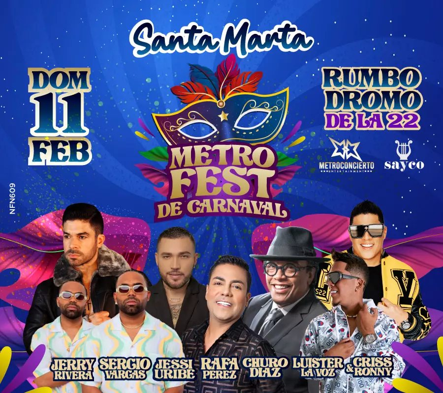

TuBoleta

¡Quien lo vive es quien lo goza! Compra tus entradas
aquí
Marca tus fechas: del 10 al 13 de febrero de 2024.
Es tu oportunidad de formar parte de la historia en el Carnaval de
Barranquilla. Adquiere tus boletas ahora y asegura tu lugar en un
evento que promete emociones sin igual. Vive la tradición, la música
y la alegría del Caribe colombiano como nunca antes.
¡Comprar aquí!
¡Quien lo vive es quien lo goza! Compra tus entradas
aquí
Marca tus fechas: del 10 al 13 de febrero de 2024.
Es tu oportunidad de formar parte de la historia en el Carnaval de
Barranquilla. Adquiere tus boletas ahora y asegura tu lugar en un
evento que promete emociones sin igual. Vive la tradición, la música
y la alegría del Caribe colombiano como nunca antes.
¡Comprar aquí!
Lista de todos los eventos presantos en carnaval
2024
Viernes 2 de Febrero Guacherna Cra 44 hasta Barrio
Abajo
Viernes 9 de Febrero Coranacion de la Reyna Y Rey
Momo Estadio Romelio Martinez
Sabado 10 de Febrero Batalla de Flores Via
40
Sabado 10 de Febrero Desfile del Rey Momo Calle
17
Domingo 11 de Febrero Gran Parada De Tradicion Via
40
Baila la Calle- Festival de Orquestas Par vial cra
50
Lunes 12 Gran Parada de Comparsas Via 40
Parque Almendra Encuentro de comedias
Martes 13 de Febrero Desfile de Joselito Cra 54 hasta
Barrio Abajo
¡Mas informacion aquí!
Conciertos Febrero 2024
Estos seran los encuentros que tendremos para los
carnavales del 2024
CONCIERTO Y CORONACION 9 DE FEBRERO ESTADIO ROMELIO
MARTINEZ

METRO CONCIERTO 1O DE FREBRERO ESTADIO ROMELIO
MARTINEZ

METRO FEST SANTA MARTA 2024
ENTRADA PARA PALCOS CARNAVAL 2024 VIA 40
Ver Home